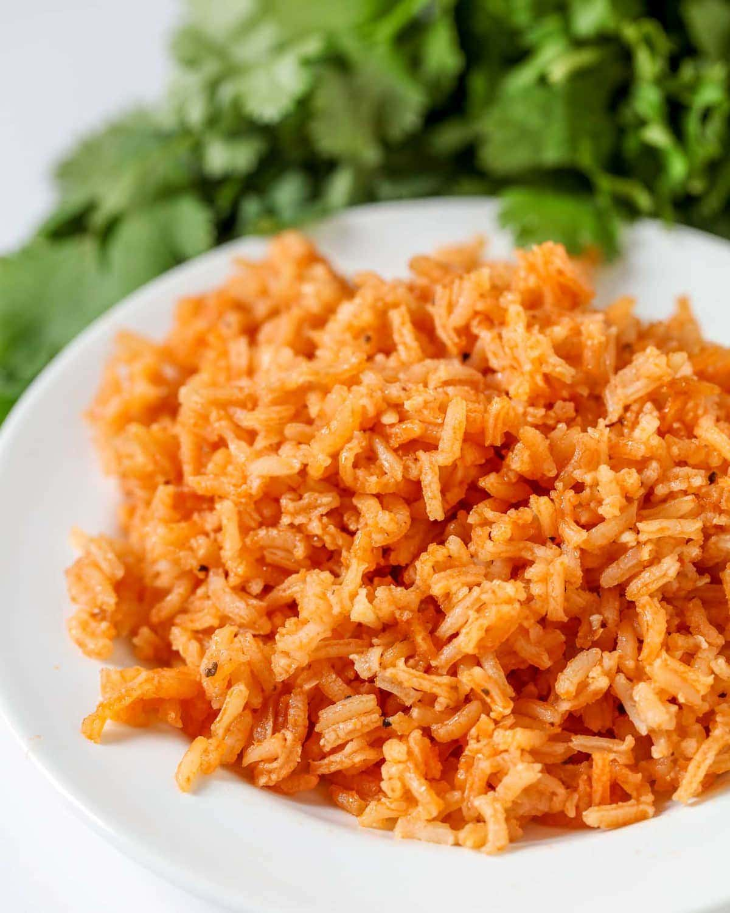

Mexican Rice

Description
This is a recipe to make mexican rice. The recipe is inspired by
a website that will be linked, so it will not be following
all the steps according to that website.
Ingredients:
- white rice 1 cup
- Canola Oil 2 tablespoons
- tomato sauce 2 oz
- onion 1/16 onion
- garlic 1 clove
- bell peppers 1/16 peppers
- Knorr 1 tablespoon
- Sazon Goya (cilantro y tomate ) To taste
- Water 2 Cups
Steps:
- Heat canola oil in sauce pan.
- tep 2: Place onion, garlic, and bell peppers in heated sauce pan and sautee 1-3 minutes.
- Mix rice into sauce pan.
- Mix tomato sauce in sauce pan.
- Pour water into sauce pan.
- Mix Knorr.
- Mix Sazon Goya.
- Heat to boil.
- Once boiling drop to low heat and heat for 15 minutes